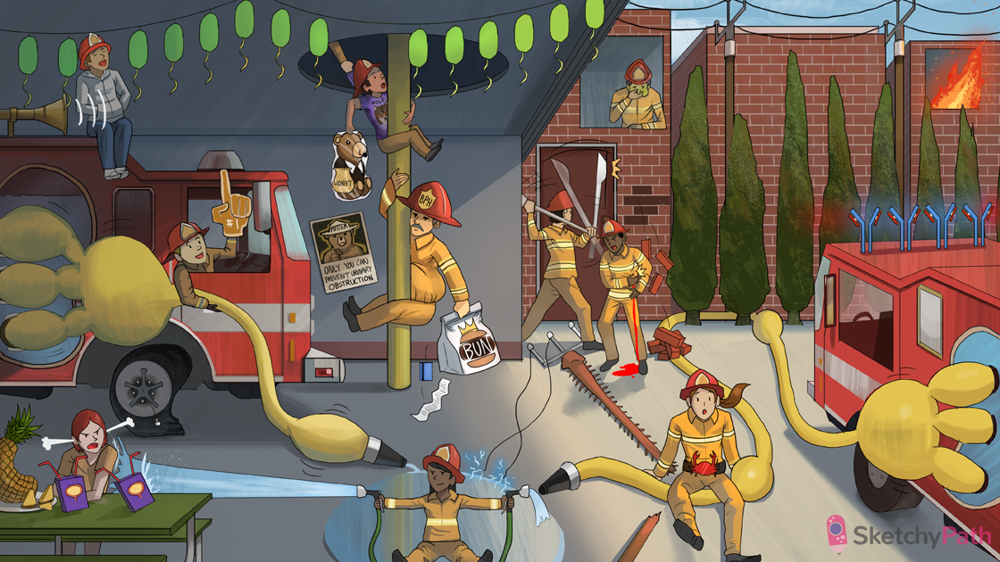

Dilated pelvic and calyceal hoses: hydronephrosis (dilated renal pelvis and calyces)
Crushed deflated tire: hydronephrosis can cause pressure atrophy of the renal medulla and cortex
Tarnished papillary hubcap: sudden onset hydronephrosis can cause renal papillary necrosis
Horn sound: hydronephrosis can be diagnosed with ultrasound
Abdominal pocket mass: newborns with hydronephrosis can present with an abdominal mass
Kid kinking proximal hose: ureteropelvic junction obstruction is the most common cause of unilateral fetal hydronephrosis
Puddle girl spraying back water: vesicoureteral reflux (VUR) can cause hydronephrosis in children (unilateral or bilateral)
Right angled spray nozzle: perpendicular insertion of the ureters into the bladder can predispose to vesicoureteral reflux
Bladder juice boxes: VUR predisposes to recurrent urinary tract infections (UTIs)
Renal pineapple: VUR predisposes to chronic pyelonephritis → scarring
High pressure steam: VUR can cause hypertension (scarring from chronic pyelonephritis leads to renal insufficiency)
Obstructing top of urethral pole: posterior urethral valve can cause urinary tract obstruction in boys → hydronephrosis (bilateral)
Manly wolf shirt: posterior urethral valve is made up of a wolffian duct remnant
Tightly wrapped Potter the bear: posterior urethral valve can cause oligohydramnios → Potter sequence (flattened nose, club feet, lung hypoplasia)
Second dilated fire truck: obstruction distal to the ureters can cause bilateral hydronephrosis (e.g. VUR, posterior urethral valve, BPH)
Falling stones obstructing hose: urolithiasis is the most common cause of urinary tract obstruction in adults (can cause unilateral hydronephrosis)
Slashing scalpel axe: the ureters can become damaged or unintentionally ligated after pelvic surgery (causing urinary tract obstruction and unilateral hydronephrosis)
Stone striking flank: acute urinary tract obstruction (e.g. urolithiasis, surgical injury) can present as sharp flank pain radiating to the ipsilateral groin
Bleeding down pant leg: acute urinary tract obstruction (e.g. urolithiasis, surgical injury) can present with gross hematuria
Nauseated firefighter: acute urinary tract obstruction (e.g. urolithiasis, surgical injury) can present with nausea and vomiting
Crab buckle: pelvic and abdominal cancers (e.g. bladder cancer, uterine cancer) can cause chronic urinary tract obstruction and hydronephrosis (unilateral or bilateral)
Fibrous back wall of trees: retroperitoneal fibrosis can cause chronic urinary tract obstruction and hydronephrosis (unilateral or bilateral)
4 IgG lights: retroperitoneal fibrosis is associated with IgG-4 related systemic disease (including autoimmune pancreatitis, Riedel's thyroiditis, sclerosing aortitis)
Enlarged fire chief grabbing urethral pole: benign prostatic hyperplasia (BPH) is a common cause urinary tract obstruction in older men (can cause bilateral hydronephrosis)
Broken spinal power lines: neurogenic bladder (e.g. due to spinal cord injury, diabetes) can cause bilateral hydronephrosis
Fast food BUN bag and credit card: BILATERAL urinary tract obstruction can cause elevated serum BUN and creatinine (postrenal azotemia)